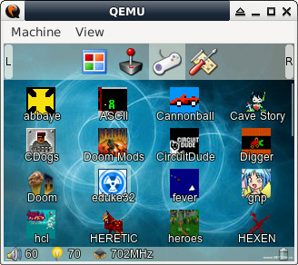
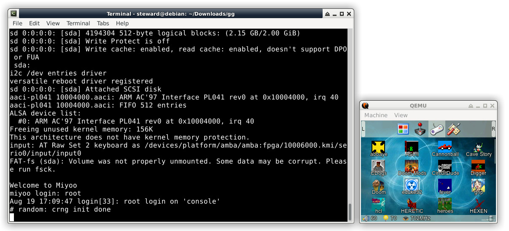
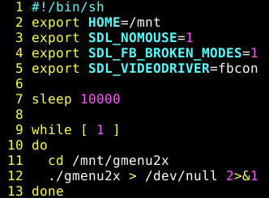
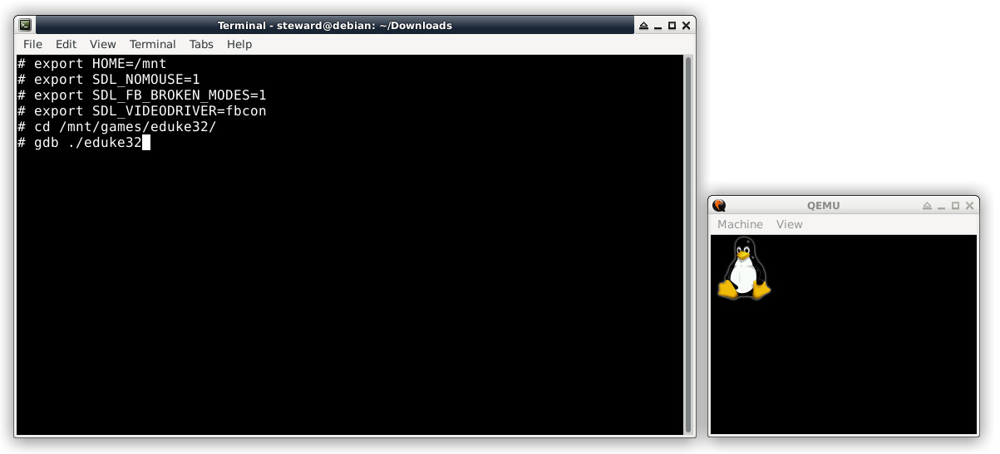
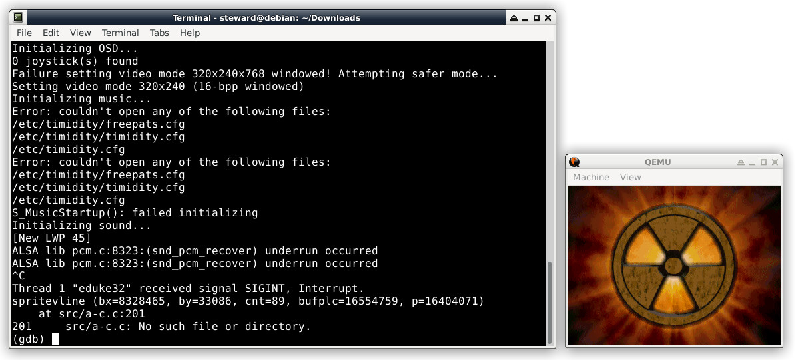

Steward
分享是一種喜悅、更是一種幸福
掌機 - FC3000 - QEMU環境
參考資訊：
https://github.com/steward-fu/website/releases/download/fc3000/qemu_20220929.7z
司徒花了一些時間將FC3000搬到QEMU環境跑，這個QEMU環境是基於QEMU versatilepb (ARM926EJS)，屬於軟體兼容運作，因此，無法在這個環境去操作F1C100S底層的暫存器，如果是基於SDL開發的話，這是一個相當適合的開發環境，因為可以很方便的使用dbg去debug程式

執行方式：
$ cd $ wget https://github.com/steward-fu/website/releases/download/fc3000/fc3000_qemu_20220929.7z $ 7za x fc3000_qemu_20220929.7z $ ./run.sh

如果要debug程式，記得在/etc/main前面加上sleep，然後重新打包rootfs.img

使用gdb debug

如果把程式碼放到sd.img，可以更方便debug

解壓縮rootfs.img
$ zcat rootfs.img | cpio -idvm
重新打包rootfs.img
$ sudo find . | sudo cpio -o -H newc | gzip -9 > ../rootfs.img